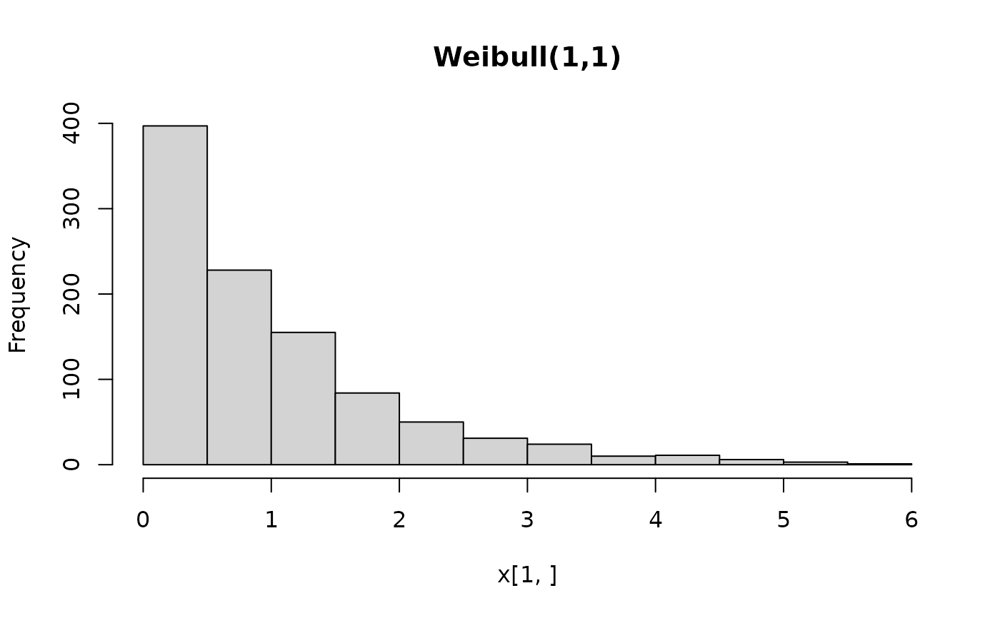
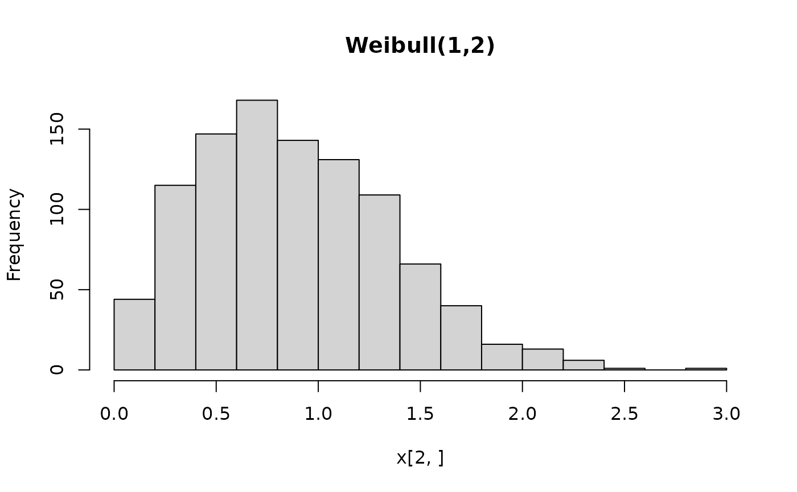
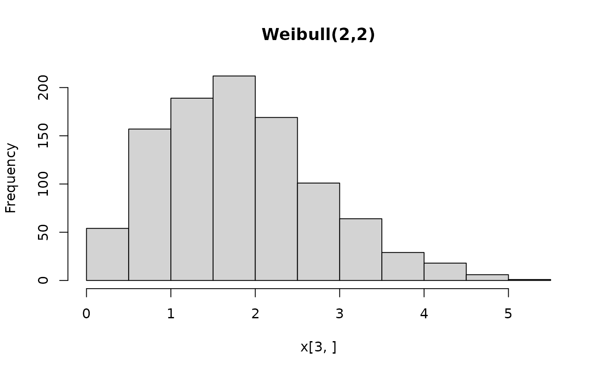

BAMLSS.RdA single class and corresponding methods encompassing all bamlss.family
distributions (from the bamlss package) using the workflow from the
distributions3 package.
BAMLSS(family, ...)object. BAMLSS family specifications recognized by
bamlss.family, including family.bamlss objects,
family-generating functions (e.g., gaussian_bamlss),
or characters with family names (e.g., "gaussian" or "binomial").
further arguments passed as parameters to the BAMLSS family. Can be scalars or vectors.
A BAMLSS distribution object.
The constructor function BAMLSS sets up a distribution
object, representing a distribution from the BAMLSS (Bayesian additive
model of location, scale, and shape) framework by the corresponding parameters
plus a family attribute, e.g., gaussian_bamlss for the
normal distribution or binomial_bamlss for the binomial
distribution. The parameters employed by the family vary across the families
but typically capture different distributional properties (like location, scale,
shape, etc.).
All parameters can also be vectors, so that it is possible to define a vector of BAMLSS distributions from the same family with potentially different parameters. All parameters need to have the same length or must be scalars (i.e., of length 1) which are then recycled to the length of the other parameters.
For the BAMLSS distribution objects there is a wide range
of standard methods available to the generics provided in the distributions3
package: pdf and log_pdf
for the (log-)density (PDF), cdf for the probability
from the cumulative distribution function (CDF), quantile for quantiles,
random for simulating random variables,
and support for the support interval
(minimum and maximum). Internally, these methods rely on the usual d/p/q/r
functions provided in bamlss, see the manual pages of the individual
families. The methods is_discrete and
is_continuous can be used to query whether the
distributions are discrete on the entire support or continuous on the entire
support, respectively.
See the examples below for an illustration of the workflow for the class and methods.
if(!requireNamespace("bamlss")) {
if(interactive() || is.na(Sys.getenv("_R_CHECK_PACKAGE_NAME_", NA))) {
stop("not all packages required for the example are installed")
} else q() }
#> Loading required namespace: bamlss
## package and random seed
library("distributions3")
#>
#> Attaching package: ‘distributions3’
#> The following object is masked from ‘package:stats’:
#>
#> Gamma
#> The following object is masked from ‘package:grDevices’:
#>
#> pdf
set.seed(6020)
## three Weibull distributions
X <- BAMLSS("weibull", lambda = c(1, 1, 2), alpha = c(1, 2, 2))
X
#> [1] "BAMLSS weibull distribution (lambda = 1, alpha = 1)"
#> [2] "BAMLSS weibull distribution (lambda = 1, alpha = 2)"
#> [3] "BAMLSS weibull distribution (lambda = 2, alpha = 2)"
## moments (FIXME: mean and variance not provided by weibull_bamlss)
## mean(X)
## variance(X)
## support interval (minimum and maximum)
support(X)
#> min max
#> [1,] 0 Inf
#> [2,] 0 Inf
#> [3,] 0 Inf
is_discrete(X)
#> Warning: no 'type' information provided by 'weibull' family
#> [1] FALSE FALSE FALSE
is_continuous(X)
#> Warning: no 'type' information provided by 'weibull' family
#> [1] FALSE FALSE FALSE
## simulate random variables
random(X, 5)
#> r_1 r_2 r_3 r_4 r_5
#> [1,] 1.004812 0.3993868 1.3084904 0.741085 3.209012
#> [2,] 1.023982 0.5593371 0.5440658 1.046042 2.244104
#> [3,] 1.254624 2.8848168 3.0103388 2.166692 2.572731
## histograms of 1,000 simulated observations
x <- random(X, 1000)
hist(x[1, ], main = "Weibull(1,1)")

hist(x[2, ], main = "Weibull(1,2)")

hist(x[3, ], main = "Weibull(2,2)")

## probability density function (PDF) and log-density (or log-likelihood)
x <- c(2, 2, 1)
pdf(X, x)
#> [1] 0.13533528 0.07326256 0.38940039
pdf(X, x, log = TRUE)
#> [1] -2.0000000 -2.6137056 -0.9431472
log_pdf(X, x)
#> [1] -2.0000000 -2.6137056 -0.9431472
## cumulative distribution function (CDF)
cdf(X, x)
#> [1] 0.8646647 0.9816844 0.2211992
## quantiles
quantile(X, 0.5)
#> [1] 0.6931472 0.8325546 1.6651092
## cdf() and quantile() are inverses
cdf(X, quantile(X, 0.5))
#> [1] 0.5 0.5 0.5
quantile(X, cdf(X, 1))
#> [1] 1 1 1
## all methods above can either be applied elementwise or for
## all combinations of X and x, if length(X) = length(x),
## also the result can be assured to be a matrix via drop = FALSE
p <- c(0.05, 0.5, 0.95)
quantile(X, p, elementwise = FALSE)
#> q_0.05 q_0.5 q_0.95
#> [1,] 0.05129329 0.6931472 2.995732
#> [2,] 0.22648023 0.8325546 1.730818
#> [3,] 0.45296046 1.6651092 3.461637
quantile(X, p, elementwise = TRUE)
#> [1] 0.05129329 0.83255461 3.46163677
quantile(X, p, elementwise = TRUE, drop = FALSE)
#> quantile
#> [1,] 0.05129329
#> [2,] 0.83255461
#> [3,] 3.46163677
## compare theoretical and empirical mean from 1,000 simulated observations
## (FIXME: mean not provided by weibull_bamlss)
## cbind(
## "theoretical" = mean(X),
## "empirical" = rowMeans(random(X, 1000))
## )